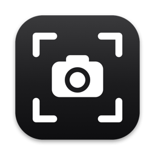

MacScreenshot
Freeze, select, done.
A fast, native, free screenshot tool for macOS:
the simple Greenshot / Flameshot alternative for Mac.
What it does
Press ⌘⇧X and the screen freezes instantly, so menus, tooltips and video frames stay exactly where they were. Drag a region, and it's saved as a file and copied to your clipboard in one go. No editor windows, no clicks in between.
- Freeze-frame capture. What you see when you press the shortcut is what you get.
- Pixel-precise magnifier. A loupe follows the pointer with exact coordinates and the selection size in pixels.
- Saved and copied every time. Paste straight into Slack, Mail, Figma or a browser.
- Quick edits (⌘⌥⇧X). Crop, arrows, boxes, circles, text and highlights, then save or replace.
- Capture last region (⌃⇧⌘X). Re-shoot the same area instantly, perfect for before/after shots.
- Smart file names, PNG or JPEG, your folder, your shortcuts.
- Light. Native Swift, about 12 MB of memory when idle. No Electron, no ads, no tracking, no network access.
Install
With Homebrew:
brew install --cask cjayxyz/tap/macscreenshotOr download the zip from the latest release and drag MacScreenshot.app into Applications. The build isn't notarized yet, so on first launch open System Settings → Privacy & Security and click Open Anyway. Then allow Screen Recording when asked.
Requires macOS 14 Sonoma or later, on Apple Silicon or Intel.
Shortcuts
| ⌘ ⇧ X | Freeze the screen and show the crosshair and magnifier |
| Drag and release | Save the selection and copy it to the clipboard |
| ⌘ A (while frozen) | Capture the whole screen instead |
| Esc | Clear the selection; press again to go back with nothing saved |
| ⌃ ⇧ ⌘ X | Capture the same area as last time, instantly |
| ⌘ ⌥ ⇧ X | Edit the last capture |
All shortcuts can be changed from the menu bar icon → Keyboard Shortcuts….